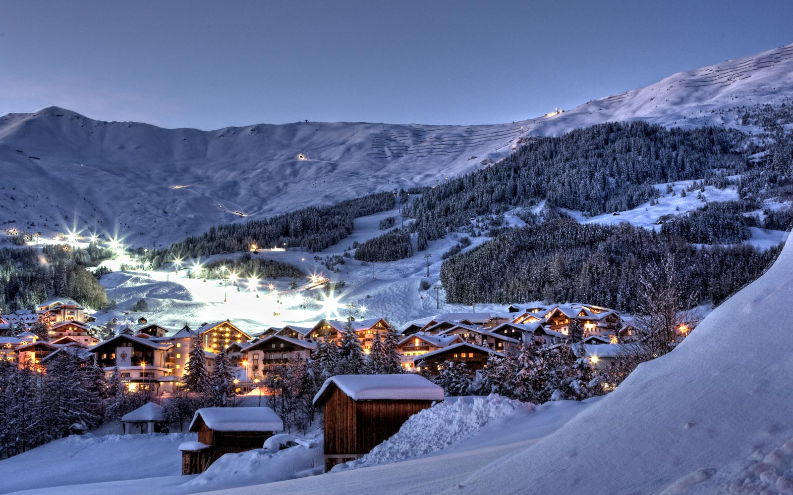
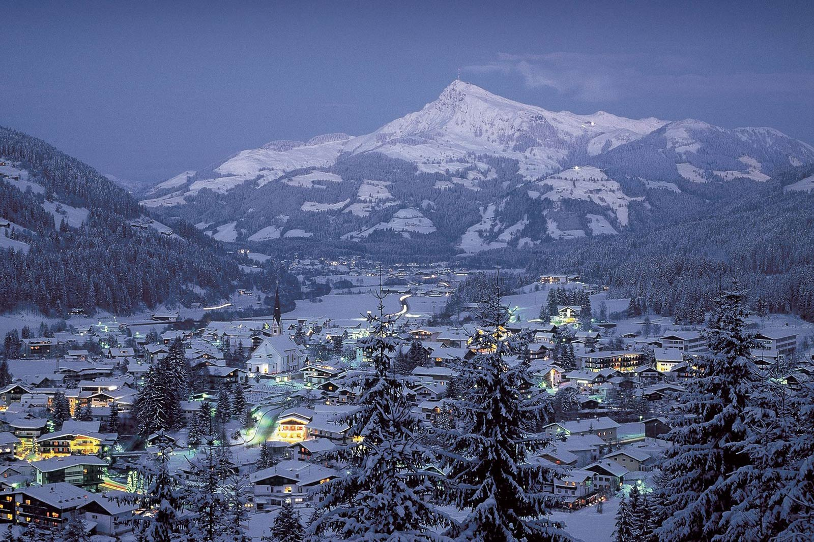

De mest populære stedene
Top 5
1. St. Moritz
St. Moritz er en alpelandsby med ca. 5029 innbyggere i den sveitsiske kantonen Graubünden. St. Moritz er kjent for å være et luksuriøst alpinanlegg, i en høyde på ca. 1800 meter over havet. Dette har gjort St. Moritz til er et populært reisemål for overklassen og internasjonale jetsettere. Det er også ansett som det dyreste alpinanlegget i verden. Takket være sin gunstige beliggenhet har St. Moritz over 300 soldager i året. Hver vinter det arrangeres «White Turf» hestesprang på den frosne innsjøen, i likhet med flere andre store arrangementer i St. Mortiz tiltrekker dette seg en mengde turister av den internasjonale overklassen. De mest populære aktivitetene inkluderer ski, snowboard og fotturer, og i nærheten er det også den verdensberømte Cresta Run kjelke kurse

2. Sölden
Sölden er et tettsted og en kommune øverst i Ötztal i Tirol, Østerrike. Befolkningen er på 3400 innbyggere, men med 15 000 gjestesenger og over to millioner overnattinger i året, blir Sölden i Østerrike kun slått av Wien i antall gjestedøgn. Selv om det også fins betydelig sommerturisme, er turismen i Sölden overveiende basert på vintersport. Sesongens første verdenscuprenn i alpint foregår vanligvis her. Det er en av de aller mest besøkte stedene i hele Østerrike både vinter og sommer. Sölden er vanligvis utgangspunktet for den årlige verdenscupen i alpint, og er en av de mest kjente skistedene i alpene. Toppstasjonen er på 3 000 moh og Sölden byr på 1 623 m fallhøyde med utfordringer for skikjørere enten du velger nedfart eller offpiste.
3. Kitzbühel
Østerrikes mest luksuriøse skisteder, soler seg mellom fjellene Hahnenkamm og Kitzbüheler Horn. Hver vinter er Hahnenkamm-løypa "Die Streif" åsted for et av de hardeste utforrennene i den alpine verdenscupen. Om sommeren ankommer horder av tennisentusiaster tyrolerbyen for å følge Austrian Open. De svingete, brosteinslagte middelaldergatene er fulle av sportsbiler og raffinerte butikker når Europas fiff vagler seg i disse helligholdte fjellsidene. Kitzbühel er en middelalderby i østlige Nord-Tirol i Østerrike med skianlegg i verdensklasse. Den ”Best of the Alps”-erklærte byen ligger kort vei fra Innsbrück og Salzburg, og er blant Østerrikes kanskje mest kjente – og mest luksuriøse – vintersportstettsteder. Allerede i 1894 ble byens første skirenn arrangert, og området har siden den gang gjort seg bemerket innen ski- og snøsportarrangementer. Blant annet arrangeres årlige World Cup-renn ved Hahnenkamm, cirka 8 km sørvest for Kitzbühel – hvor alpinister fra hele verden prøver seg på utfordrende bakker og konkurranser.
5. Val d'Isère
Val d'Isère er et av Frankrikes klassiske skisteder, de franske Alpenes ledende diva. Byen er over 300 år gammel, og historien har satt sine spor. Over hele byen hviler nasjonalhelten Jean-Claude Killys ånd, skiområdet er til og med døpt etter ham. Her er det skikjørere fra hele verden, noe som gir byen en fin, internasjonal atmosfære med et stort utvalg av afterskisteder, vinbarer og restauranter.Val d`Isère går for å være et svært hyggelig sted, lite, smalt og langstrakt av fasong.Det går for å være et av verdens beste skisteder med over 300 km løype og 94 heiser.
6. Groeden
Groeden er en alpedal i Dolomittene i Syd-Tirol.Dalen har stor turisttrafikk både sommer og vinter. Om sommeren er det fjelltur som lokker turister til dalen. I 1970 ble alpin-VM arrangert her, og det blir årlig arrangert verdenscup i alpint. Skistedet Val Gardena er kjent for å være en av de viktigste skistedene i Syd-Tyrol. Skistedet Val Gardena er kjent for sine lange flotte bakker, og er kjent for publikum fra løp i world cupen i alpint. Val Gardena, med sine 175 km med flotte løyper tilbyr en rekke mer eller mindre bratte bakker, urørte fjellsider, og 115 kilometer med oppkjørte langrensspor. Området er virkelig tilrettelagt for skiferie i alpene med ulike ting å finne på på ettermiddagen, blant annet fjellklatring, tennis, squash og alt annet du kan ønske deg.